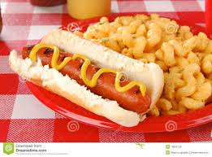

Cheesy Noodles and Weiners

Description
God only knows what is actually in hot dogs and that fake powdered cheese can't be healthy
Ingredients
- Package of hot dogs
- Box of mac and cheese (velveeta is the best but my wife buys Kraft :(
- milk
- butter
- Condiments
Cooking Instructions
- Boil some water
- Put the noodles in boiling water for about 7 minutes (unless you like 'em limp)
- Preheat the grill
- Toss weiners on the grill until the are charred (no one likes a half cooked weiner)
- Strain noodles
- Now things get a little sketchy:
If you used Velveeta, squeeze that liquid gold over the noodles. Chug the milk and throw butter at your cat to express your dominance.
If you went with Kraft, stir the milk, butter, and whatever that fake powder cheese shit is into the noodles.
- Trust me your gonna want to season this with salt, pepper, ketchup, mustard, cyanide, whatever you have